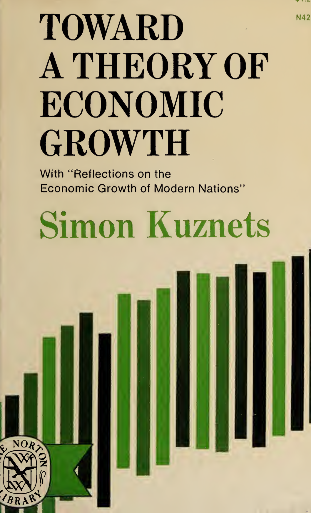
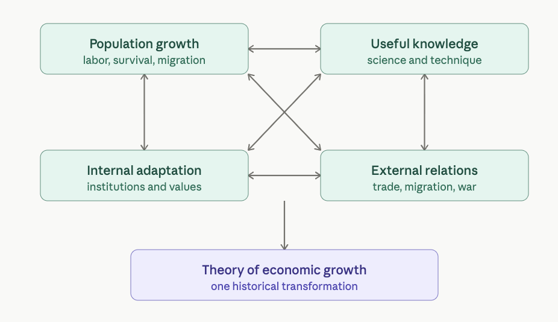
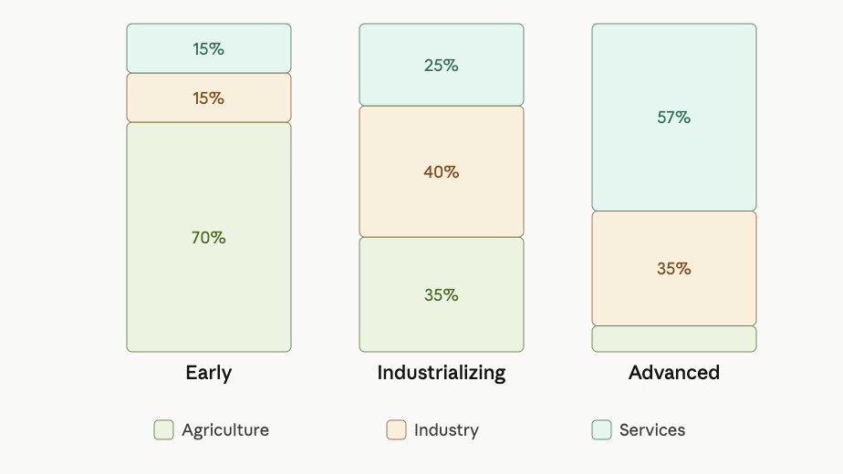
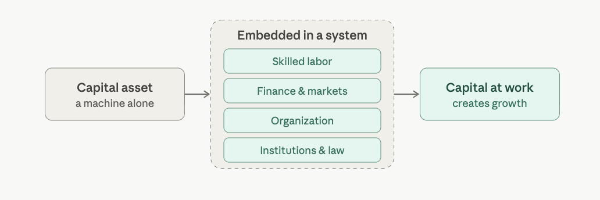

Notes from Simon Kuznets on Economic Growth
Lessons from Toward A Theory Of Economic Growth by Simon Kuznets
Introduction
Simon Kuznets was a Nobel Prize winner in 1971 for Economics. He was given a Nobel prize for contributing a newer insight for economic and social structure and process of development. [1]
This work was written in 1968, however this work is highly valuable. Reasons to read this work is it’s a foundational work in developmental economics. Kutznets helped to establish the entire field of modern growth analysis. Kuznets’s central argument is more careful: a real theory of economic growth must explain the long-term transformation of whole societies. [2], [3]
Kuznets’s Approach to Economic Growth
This means population, production, technology, agriculture, industry, cities, capital, institutions, social values, international trade, migration, war, and the state all have to be brought into one explanation. He calls the book Towards a theory because he does not think economics yet has a complete theory of growth. He thinks economists first need a broad empirical map of what actually happened across many countries over long periods.
Structure of the Book

This book contains two essays, Kuznets says the first essay gives a broad quantitative view of economic growth, while the second essay reflects more on non-quantitative aspects: institutions, values, politics, and social organization. This matters because he is not treating growth as a narrow GDP problem. He is saying that measured output is central, but measured output itself depends on deeper changes in society.
For Kuznets, economic growth means a sustained increase in population and product per capita. That phrase is very important. He is not satisfied with total output rising because population rises. He is also not satisfied with one temporary boom. Growth must be sustained, and it must involve output per person rising. In simple terms, total product equals population multiplied by product per person. A nation can become larger without becoming richer per person, and that is not the kind of growth Kuznets is most interested in. This is why statistics matter as Economic growth is a quantitative concept. We may feel that one society is richer than another, but without numbers we cannot know the magnitude, pattern, speed, or distribution of growth.

Kuznets wants data on population, national income, per capita product, sectoral shares, capital formation, consumption, trade, and migration. He chooses the nation-state as the main unit of study. Kuznets begins by explaining why economic growth became such an urgent modern question. One reason was fear of secular stagnation in already industrialized countries. After the Great Depression, economists became worried that advanced economies might run out of private investment opportunities, leading to chronic unemployment and low output. This made growth seem necessary.
Underdevelopment
A second reason was the problem of poorer or “underdeveloped” countries. Kuznets gives three meanings of underdevelopment. It can mean failure to use existing technical knowledge; it can mean backwardness compared with leading economies; or it can mean material poverty, where most people lack adequate subsistence and comfort. The important point is that underdevelopment could also mean, knowledge exists, but institutions, social structures, or political arrangements prevent its use.
Population Dynamics
The first major empirical topic is population. Kuznets notes that world population grew enormously in the modern period. He emphasizes that this growth was because death rates fell. Before modern public health and modern production, high birth rates were often offset by high death rates, epidemics, famine, war, infant mortality, and disease. Modern growth changed the death side of the equation. More people survived childhood, more reached working age.
This matters economically because, If many children die young, families and societies invest enormous effort without gaining a future adult worker. If epidemics are frequent, people plan for the short term. If cities are deadly, urbanization is limited. When death rates fall, the time horizon of individuals and societies changes. Families can invest more in education. Cities can grow. Labor forces become larger and more stable. Economic organization becomes more complex because life itself becomes more predictable. He also emphasizes migration. For the world as a whole, population changes through births and deaths. But for individual countries, migration can be decisive. Immigration can raise population and labor supply; emigration can reduce them.
National Product and Productivity
After population, Kuznets turns to national product. He treats national income or net national product as one of the most effective measures of economic performance. The idea is to measure the goods and services produced during a period. The key point is that growth must be measured by the new value created, not by gross transactions alone.
This is why per capita product is central. If total product rises but population rises just as fast, output per person may not improve. If output per person rises, that means each person, on average, is connected to a more productive economic system. That higher productivity may come from better tools, better organization, better health, better education, better infrastructure, better specialization, better technology, or better use of capital.
He also shows that modern economic growth involved enormous differences between countries. Some countries achieved high per capita income much earlier; others lagged far behind. The important theoretical problem is not only that some places are poor and others rich. The deeper problem is, why did some societies convert modern knowledge into rising per capita output, while others did not? That question leads him away from single-factor explanations.
Structural Transformation
A major part of Kuznets’s argument is structural transformation. Economic growth does not mean merely producing more of the same things. The internal structure of the economy changes. The share of agriculture usually declines. Industry expands. Later, services expand. Labor moves across sectors. The composition of national product changes. Consumption and investment patterns change. Urbanization increases. The occupational structure of society changes.

But Kuznets is careful: he does not say growth is simply moving workers from backward agriculture to progressive industry. He says that is too mechanical. A modern economy requires an agricultural revolution as well as an industrial revolution. Agriculture must become more productive; otherwise labor cannot be released from the land without reducing food supply. He stresses that growth requires technological and organizational change in agriculture itself, not merely abandonment of agriculture.
This is one of his strongest insights. Modern industrialization depends on rising agricultural productivity. If fewer workers can produce more food, then labor, savings, and demand can shift toward industry and services. If agriculture remains stagnant, the whole economy is constrained. So for Kuznets, structural change is productivity transformation inside sectors and between sectors.
Urbanization follows from this. As nonagricultural activity expands, people concentrate in towns and cities. Cities allow specialization, larger markets, labor pooling, transport networks, financial institutions, administrative systems, education, and dense exchange of knowledge. But urbanization also requires sanitation, public health, housing, transport, and governance. Without those, density can become disorder rather than productivity.
Capital formation is another major part of the story. Growth requires part of current output to be set aside for future production. That means investment in machines, buildings, infrastructure, transport, utilities, housing, education, and other long-lived assets. Kuznets is interested in the share of national product devoted to capital formation because it reveals how much of society’s resources are being used to enlarge future productive capacity rather than immediate consumption.
But capital alone is not enough. Machines do not create growth by themselves. They must be embedded in a system of knowledge, skilled labor, organization, maintenance, markets, and institutions. A railroad, factory, power plant, or irrigation system is not merely a physical object. It requires finance, law, engineering, management, trained labor, reliable operation, and a social system capable of using it productively.

Role of Knowledge
This leads to Kuznets’s deepest factor, the growth of useful knowledge. He says the accumulation of tested empirical knowledge is at the base of the enormous growth of population and production in the modern period. Modern economies are full of industries and techniques that were unknown one or two centuries earlier. Scientific and technical knowledge changes what human beings can produce, how fast they can produce it, and how many people can survive at higher living standards.
However, he makes a crucial distinction between the stock of knowledge and the application of knowledge. Knowledge may be transnational, but its use is uneven. A discovery may exist somewhere in the world, but not every society can apply it. Application requires education, skilled people, institutions, capital, incentives, administrative capacity, and social openness to change. This is why growth potential can exist without actual growth.
Kuznets also observes that knowledge itself may be skewed toward the problems of advanced societies. Countries that industrialized first were able to devote more resources to science and invention, and naturally much of that invention served their own needs. So even when knowledge spreads internationally, it may not fit every society’s conditions equally. Adapting knowledge to local conditions becomes a major developmental task.
This is why he places so much emphasis on internal adaptation. A country must adapt its institutions, social organization, political structure, labor systems, capital markets, education, and values to the possibilities opened by modern knowledge. Growth potential is not automatically realized. It has to be absorbed by society. The same technical possibility may produce rapid growth in one country and weak results in another because the surrounding institutions differ.
Kuznets strongly warns against treating politics, society, and technology as “outside” economics. He says economists often assume technological change, social structure, political organization, and international power relations instead of analyzing them. For short-term analysis, that may sometimes be tolerable. For long-term growth, it is not. Long-term growth changes the political and social framework itself, so a theory that assumes those things are fixed will miss the essence of growth.
Kuznets is saying that growth theory cannot be purely economic in the narrow sense. It must become historical, institutional, demographic, technological, and political. External relations are also central. Nations do not grow in isolation. They trade goods, exchange capital, receive or lose migrants, borrow technology, fight wars, form empires, impose tariffs, create colonies, negotiate access, and compete for power. Kuznets argues that external relations are partly peaceful flows of goods, people, and capital, and partly power relations involving pressure, conflict, and war.
He thinks trade, migration, and capital movement can support growth, but they exist within a world of unequal power. Some nations are better positioned historically, technologically, militarily, or institutionally. So international relations can spread growth, but they can also distort it, delay it, or make it violent.
Towards a General Theory
Near the end of the first essay, Kuznets says that a proper theory of economic growth would have to unite at least five sub-theories: population growth, growth in the stock of knowledge, internal adaptation to growth potential, external relations among nations, and the interrelations among all these processes. This is the skeleton of his whole approach.
The word interrelations is essential. Population growth affects labor supply, dependency ratios, migration, education demand, and urbanization. Knowledge affects technology, health, agriculture, industry, and military capacity. Internal institutions affect whether knowledge is used well. External relations affect trade, capital, war, migration, and technology transfer. Each factor changes the others. Kuznets is building a systems view of economic growth before the language of systems thinking became common.
That is why he resists simple explanations. Capital matters, but capital without knowledge and institutions is weak. Population matters, but population without productivity can strain resources. Technology matters, but technology without adaptation may remain unused. Trade matters, but trade without internal capacity may not transform society. The state matters, but state power can support growth or distort it. War can accelerate some technologies but destroy long-term welfare.
So the way to understand Kuznets is: modern economic growth is sustained increase in output per person, made possible by the application of expanding knowledge, accompanied by deep changes in population, production structure, agriculture, industry, cities, capital formation, institutions, social values, and international relations.He is giving a discipline of thought for thinking about economic growth.
To understand growth, We must ask: What is happening to population? What is happening to output per person? What is happening to agriculture? What is happening to industry? What is happening to cities? What is happening to capital formation? What is happening to useful knowledge? What institutions allow or block the use of that knowledge? What role does the state play? What external relations shape the nation’s opportunities and constraints?
Simon Kuznets forces us to stop saying growth comes from factories or growth comes from education or growth comes from investment as if one answer is enough. Kuznets’s answer is asking deeper question of economic growth. Economic Growth is a long historical transformation of the entire social and economic organism.
Applications of Kuznets’s Work for Tamil Nadu
In this section, I share how to apply Kuznets’s work to Tamil Nadu. The point is not to apply every detail of his theory, but to use his framework to ask deeper questions about Tamil Nadu’s economic growth and well-being.
Kuznets’s work can be applied to Tamil Nadu in a practical way.
His question is whether the whole society is being transformed into a higher productivity society.
For Tamil Nadu, this means we should not ask only, “Is Tamil Nadu’s GSDP increasing?” We ask a deeper question about Tamil Nadu. How are the people, districts, farms, factories, towns, institutions, and knowledge systems are becoming more productive?
The First application is measurement. Kuznets shows that growth must be measured through national income, product per capita, sectoral shares, capital formation, migration, trade, and productivity. For Tamil Nadu, this means the state should measure not only total GSDP, but also district-wise per capita income, value added per worker, agricultural productivity, manufacturing productivity, services productivity, household income, migration, exports, capital formation, and sectoral employment. A state can grow in total size while many workers remain trapped in low productivity jobs. So the first Kuznets application, We can learn for Tamil Nadu is measuring value added per person, not just total output.
The Second application is Agriculture. Kuznets is clear that modern growth does not mean simply leaving agriculture. Agriculture itself must become more productive. This is important for Tamil Nadu because rural districts cannot be developed only by sending people away from farming. Tamil Nadu requires higher productivity agriculture, irrigation efficiency, water conservation, cold storage, food processing, crop diversification, farmer-producer organizations, logistics, seed quality, mechanization, and rural agro-industries. Agriculture must become a source of surplus, savings, demand, and industrial linkage. If agriculture remains stagnant, rural Tamil Nadu will remain dependent on remittances, welfare, and low-value work.
The Third application is Industrial Deepening. Kuznets would not be satisfied by saying Tamil Nadu has factories. He would ask: what kind of factories? Are they low-skill assembly units, or are they building local productive capacity? Tamil Nadu already has strong sectors such as automobiles, auto components, textiles, leather, electronics, engineering, pharmaceuticals, software, and financial services. The Tamil Nadu Industrial Policy also identifies focus and sunrise sectors such as automobiles, chemicals, electronic hardware, heavy engineering, textiles, software, aerospace and defence, agro and food processing, renewable energy components, medical electronics, electric vehicles, biotechnology, pharmaceuticals, petrochemicals, footwear, and technical textiles. But the Kuznets application is to move from having industries to Deepening Industries: supplier networks, component manufacturing, machine tools, testing labs, design capacity, R&D, quality certification, engineering skill, logistics, and local firms that can climb the value chain.
The Fourth application is services productivity. Tamil Nadu has a large services sector. The Economic Survey of Tamil Nadu 2024-25 [4] reports that services contributed 53.63% of Gross State Value Added in 2023-24, while the secondary sector contributed 33.37% and the primary sector around 13%. But Kuznets would ask whether services are high-productivity or low-productivity. More shops, restaurants, local retail, coaching centres, and real estate activity may create employment, but they may not create high value added per worker. Tamil Nadu needs services that raise productivity: IT, engineering services, healthcare, logistics, finance, research, design, education technology, tourism management, global capability centres, legal and accounting services, data centres, and exportable digital services.
The Fifth application is Urbanization. Kuznets sees cities as engines of specialization, labour pooling, markets, finance, administration, education, and knowledge exchange. Tamil Nadu is already highly urbanized, the state government’s urban planning portal notes that Tamil Nadu had an urban population of about 3.5 crore, or 48.44% of the state population, in the 2011 Census. Kuznets would warn that urbanization without governance becomes disorder. Tamil Nadu’s towns must become productive cities, not congested settlements. This requires drainage, sewage, roads, public transport, zoning, waste management, street design, parking discipline, walkability, municipal finance, and enforcement. Otherwise density will produce traffic, flooding, pollution, disease, and real estate speculation instead of productivity.
The Sixth application is Useful knowledge. Kuznets places the growth of useful knowledge [5] at the centre of modern economic growth. For Tamil Nadu, this means education must be connected to production. The state boats number of colleges, but it’s not how many engineering colleges, arts colleges, polytechnics, ITIs, and medical colleges exist. The question is whether these institutions produce usable knowledge and usable skill that can be applied into industry, trade, state institutions. The higher education of Tamil Nadu needs to connect colleges with industry, hospitals, farms,factories, ports, logistics companies, software firms, and research labs. Knowledge must become skill, skill must become productivity; productivity must become higher wages and stronger firms.
The Seventh application is Internal Adaptation. Kuznets says knowledge may exist in the world, but each society must adapt it to its own conditions. This is very important for Tamil Nadu. Tamil Nadu can learn from Japan, South Korea, Taiwan, China, Singapore, Germany, and the United States. It must adapt those lessons to Tamil Nadu’s own conditions, water stress, caste society, fragmented landholding, strong welfare politics, district inequality, engineering talent, diaspora networks, port access, industrial clusters, urban congestion, and small-firm structure. In Kuznets’s terms, Tamil Nadu’s task is not simply to import knowledge, but to absorb and adapt knowledge.
The Eighth application is capital formation. Kuznets argues that growth requires part of current output to be invested into future productive capacity. For Tamil Nadu, this means capital must go into roads, ports, logistics, power, water systems, industrial parks, testing facilities, R&D centres, technical education, housing, public health, and urban infrastructure. The Tamil Nadu Industrial Policy [6] sets targets such as attracting ₹10 lakh crore investment between 2020 and 2025, creating 20 lakh employment opportunities by 2025, and increasing manufacturing’s contribution to 30% of GSVA by 2030.
The Ninth application is External Relations. Trade, migration, capital flows, technology transfer, ports, and global power relations matter. Tamil Nadu is already deeply connected to exports and global production. IBEF notes that Tamil Nadu has a diversified manufacturing base and is strong in automobiles, auto components, engineering, pharmaceuticals, garments, textiles, leather, chemicals, plastics, and related sectors. It also reports that Tamil Nadu’s merchandise exports stood at ₹4,61,757 crore, or US$52.07 billion, in FY25[7]. The Kuznets application is that exports must not remain shallow. Tamil Nadu must use exports to build local capability, local suppliers, technical standards, quality systems, and higher wages.
The Tenth application is State Capacity. For Tamil Nadu, this is one of the biggest lessons. Development requires a state that can execute, land use, water, transport, electricity, municipal finance, industrial approvals, technical education, public health, pollution control, labour skilling, and district planning. Welfare schemes can improve human welfare, but welfare alone cannot create high productivity. Industrial announcements can attract investment, but announcements alone cannot create deep development. Tamil Nadu needs institutional execution.
The Eleventh application is district-level development. Kuznets would not be satisfied with state averages. Tamil Nadu may look strong as a whole, but the real test is district-wise transformation. Chennai, Coimbatore, Hosur, Tiruppur, Sriperumbudur, and parts of western Tamil Nadu may grow strongly, while southern and interior districts may remain weaker. We may ask, What is each district’s product per capita? What is its sectoral structure? What is its agricultural productivity? What industries does it have? What is its urban quality? What is its migration pattern? What skills does it produce? What capital is being formed there?
So the practical application of Kuznets’s economic theory of growth for Tamil Nadu is moving from GDP marketing numbers into productivity led transformation. It must ask whether agriculture is becoming more Productive, whether Industry is becoming Deeper, Whether services are becoming Higher value, whether Cities are becoming Efficient, whether Education is becoming useful knowledge for industry, whether Capital is becoming Productive capacity, whether Exports are creating local capability, and whether institutions can execute.
The test and challenge is whether Tamil Nadu is transforming the whole economic organism from low productivity to high productivity. That is the central application of economic theory of growth from Kuznets’s work to Tamil Nadu.
குஸ்நெட்ஸின் சிந்தனைகளை தமிழ்நாட்டிற்குப் பயன்படுத்துதல் (Tamil)
எனது எழுத்துகளில், தொழில்மயமாக்கல் மற்றும் பொருளாதார வளர்ச்சியைத் தமிழகத்திற்கு எவ்வாறு நடைமுறைப்படுத்துவது என்பதை நான் விளக்குகிறேன். சைமன் குஸ்நெட்ஸ் ஒரு அமெரிக்கப் பொருளாதார நிபுணரும் புள்ளிவிவரவியலாளரும் ஆவார்; இவர் 1971-ஆம் ஆண்டு பொருளாதார அறிவியலுக்கான நோபல் நினைவுப் பரிசைப் பெற்றார்.
அறிவியல், தொழில்நுட்பம் மற்றும் தொழில் துறைகளில் உலகின் பிற பகுதிகளிலிருந்து சிறந்த நடைமுறைகளைக் கற்றுக்கொண்டு, அவற்றை தங்கள் சொந்தப் பகுதிகளில் செயல்படுத்தும் பல தலைவர்களை நான் கண்டிருக்கிறேன். ஜப்பான், தைவான் மற்றும் சீனத் தலைவர்கள் இத்தகைய நடவடிக்கைகளை மேற்கொண்டனர். எனவே, நம் மாநிலத்தை உலகின் மிக முன்னேறிய நிலைக்குக் கொண்டுசெல்ல, நாம் தமிழர்கள் ஏன் கனவு கண்டு அதைச் செயல்படுத்தக்கூடாது என்று நான் கேட்கிறேன்?
இந்தப் பகுதியில், குஸ்நெட்ஸின் சிந்தனைகளை தமிழ்நாட்டிற்கு எவ்வாறு பயன்படுத்தலாம் என்பதை நான் பகிர்ந்து கொள்கிறேன். அவருடைய கோட்பாட்டின் ஒவ்வொரு விவரத்தையும் அப்படியே பயன்படுத்துவது நோக்கம் அல்ல; மாறாக, தமிழ்நாட்டின் பொருளாதார வளர்ச்சியையும் நல்வாழ்வையும் பற்றி ஆழமான கேள்விகளைக் கேட்க அவருடைய சிந்தனை அமைப்பைப் பயன்படுத்துவதே நோக்கம். குஸ்நெட்ஸின் பணியை தமிழ்நாட்டிற்கு நடைமுறை ரீதியாகப் பயன்படுத்த முடியும்.
ஒட்டுமொத்த சமூகமும் உயர் உற்பத்தித்திறன் கொண்ட சமூகமாக மாற்றப்படுகிறதா என்பதே அவருடைய கேள்வி.
தமிழ்நாட்டைப் பொறுத்தவரை, “தமிழ்நாட்டின் GSDP (மொத்த மாநில உள்நாட்டு உற்பத்தி) உயர்கிறதா?” என்பதை மட்டும் நாம் கேட்கக் கூடாது. அதைவிட ஆழமான கேள்வியைக் கேட்க வேண்டும்: தமிழ்நாட்டின் மக்கள், மாவட்டங்கள், பண்ணைகள், தொழிற்சாலைகள், நகரங்கள், நிறுவனங்கள் மற்றும் அறிவு அமைப்புகள் மேலும் உற்பத்தித்திறன் மிக்கதாக மாறி வருகின்றனவா என்பதே அந்தக் கேள்வி.
முதலாவது பயன்பாடு — அளவீடு. தேசிய வருமானம், தனிநபர் உற்பத்தி, துறைவாரி பங்குகள், மூலதன உருவாக்கம், இடப்பெயர்வு, வர்த்தகம், உற்பத்தித்திறன் ஆகியவற்றின் வழியாக வளர்ச்சியை அளவிட வேண்டும் என்று குஸ்நெட்ஸ் காட்டுகிறார். தமிழ்நாட்டைப் பொறுத்தவரை, மாநிலம் மொத்த GSDP-ஐ மட்டும் அளவிடாமல், மாவட்ட வாரியான தனிநபர் வருமானம், ஒரு தொழிலாளிக்கான மதிப்புக் கூட்டல், வேளாண் உற்பத்தித்திறன், உற்பத்தித் தொழில் உற்பத்தித்திறன், சேவைத்துறை உற்பத்தித்திறன், குடும்ப வருமானம், இடப்பெயர்வு, ஏற்றுமதி, மூலதன உருவாக்கம், மற்றும் துறைவாரி வேலைவாய்ப்பு ஆகியவற்றையும் அளவிட வேண்டும். ஒரு மாநிலம் மொத்த அளவில் வளர்ந்தாலும், பல தொழிலாளர்கள் குறைந்த உற்பத்தித்திறன் கொண்ட வேலைகளில் சிக்கிக் கொண்டிருக்கலாம். எனவே, தமிழ்நாட்டிற்கு குஸ்நெட்ஸ் தரும் முதல் பாடம்: மொத்த உற்பத்தியை மட்டும் அல்ல, தனிநபருக்கான மதிப்புக் கூட்டலை அளவிடுவதே.
இரண்டாவது பயன்பாடு — வேளாண்மை. நவீன வளர்ச்சி என்பது வேளாண்மையை வெறுமனே கைவிடுவது அல்ல என்று குஸ்நெட்ஸ் தெளிவாகக் கூறுகிறார். வேளாண்மையே மேலும் உற்பத்தித்திறன் மிக்கதாக மாற வேண்டும். மக்களை விவசாயத்திலிருந்து விலக்கி அனுப்புவதன் மூலம் மட்டும் கிராமப்புற மாவட்டங்களை வளர்க்க முடியாது என்பதால், இது தமிழ்நாட்டிற்கு முக்கியமானது. தமிழ்நாட்டிற்கு உயர் உற்பத்தித்திறன் வேளாண்மை, நீர்ப்பாசனத் திறன், நீர் சேமிப்பு, குளிர்பதனக் கிடங்கு, உணவுப் பதப்படுத்துதல், பயிர் பல்வகைப்படுத்தல், விவசாயிகள் உற்பத்தியாளர் அமைப்புகள் (FPOs), தளவாடங்கள், விதைத் தரம், இயந்திரமயமாக்கல், மற்றும் கிராமப்புற வேளாண் தொழில்கள் தேவை. வேளாண்மை உபரி, சேமிப்பு, தேவை மற்றும் தொழில் தொடர்பின் ஆதாரமாக மாற வேண்டும். வேளாண்மை தேக்கமடைந்தால், கிராமப்புற தமிழ்நாடு பணவனுப்பல்கள் (remittances), நலத்திட்டங்கள் மற்றும் குறைந்த மதிப்புள்ள வேலைகளையே சார்ந்திருக்கும்.
மூன்றாவது பயன்பாடு — தொழில் ஆழப்படுத்துதல். தமிழ்நாட்டில் தொழிற்சாலைகள் உள்ளன என்று சொல்வதால் மட்டும் குஸ்நெட்ஸ் திருப்தியடைய மாட்டார். அவர் கேட்பார்: எத்தகைய தொழிற்சாலைகள்? அவை குறைந்த திறன் கொண்ட சேர்க்கை அலகுகளா, அல்லது உள்ளூர் உற்பத்தித் திறனை உருவாக்குபவையா? தமிழ்நாட்டில் ஏற்கனவே வாகனங்கள், வாகனப் பாகங்கள், ஜவுளி, தோல், மின்னணுவியல், பொறியியல், மருந்தகவியல், மென்பொருள், மற்றும் நிதிச் சேவைகள் போன்ற வலுவான துறைகள் உள்ளன. தமிழ்நாடு தொழில் கொள்கை, கவனத் துறைகளாகவும் வளரும் (sunrise) துறைகளாகவும் வாகனங்கள், இரசாயனங்கள், மின்னணு வன்பொருள், கனரகப் பொறியியல், ஜவுளி, மென்பொருள், விண்வெளி மற்றும் பாதுகாப்பு, வேளாண் மற்றும் உணவுப் பதப்படுத்துதல், புதுப்பிக்கத்தக்க ஆற்றல் கூறுகள், மருத்துவ மின்னணுவியல், மின்சார வாகனங்கள், உயிரித்தொழில்நுட்பம், மருந்துகள், பெட்ரோ இரசாயனங்கள், காலணி, மற்றும் தொழில்நுட்ப ஜவுளி ஆகியவற்றை அடையாளம் காண்கிறது. ஆனால் குஸ்நெட்ஸின் பயன்பாடு என்னவென்றால், “தொழில்கள் இருப்பது” என்பதிலிருந்து “தொழில்களை ஆழப்படுத்துவது” என்பதற்கு நகர்வதே: சப்ளையர் வலையமைப்புகள், கூறு உற்பத்தி, இயந்திரக் கருவிகள், சோதனைக் கூடங்கள், வடிவமைப்புத் திறன், ஆராய்ச்சி மற்றும் மேம்பாடு (R&D), தரச் சான்றிதழ், பொறியியல் திறன், தளவாடங்கள், மற்றும் மதிப்புச் சங்கிலியில் மேலேறக்கூடிய உள்ளூர் நிறுவனங்கள்.
நான்காவது பயன்பாடு — சேவைத்துறை உற்பத்தித்திறன். தமிழ்நாட்டில் பெரிய சேவைத்துறை உள்ளது. தமிழ்நாடு பொருளாதார ஆய்வு 2024-25 [4] படி, 2023-24-ல் சேவைத்துறை மொத்த மாநில மதிப்புக் கூட்டலில் (GSVA) 53.63% பங்களித்தது; இரண்டாம் நிலைத் துறை 33.37% பங்களித்தது; முதன்மைத் துறை சுமார் 13% பங்களித்தது. ஆனால் சேவைகள் உயர் உற்பத்தித்திறன் கொண்டவையா அல்லது குறைந்த உற்பத்தித்திறன் கொண்டவையா என்று குஸ்நெட்ஸ் கேட்பார். கடைகள், உணவகங்கள், உள்ளூர் சில்லறை வணிகம், பயிற்சி மையங்கள், மற்றும் ரியல் எஸ்டேட் நடவடிக்கைகள் வேலைவாய்ப்பை உருவாக்கலாம், ஆனால் அவை ஒரு தொழிலாளிக்கு உயர் மதிப்புக் கூட்டலை உருவாக்காமல் போகலாம். தமிழ்நாட்டிற்கு உற்பத்தித்திறனை உயர்த்தும் சேவைகள் தேவை: தகவல் தொழில்நுட்பம் (IT), பொறியியல் சேவைகள், சுகாதாரம், தளவாடங்கள், நிதி, ஆராய்ச்சி, வடிவமைப்பு, கல்வித் தொழில்நுட்பம், சுற்றுலா மேலாண்மை, உலகளாவிய திறன் மையங்கள் (GCCs), சட்ட மற்றும் கணக்கியல் சேவைகள், தரவு மையங்கள், மற்றும் ஏற்றுமதி செய்யக்கூடிய இலக்க (digital) சேவைகள்.
ஐந்தாவது பயன்பாடு — நகரமயமாக்கல். குஸ்நெட்ஸ் நகரங்களைச் சிறப்புத் தேர்ச்சி, தொழிலாளர் திரட்சி, சந்தைகள், நிதி, நிர்வாகம், கல்வி மற்றும் அறிவுப் பரிமாற்றத்தின் இயந்திரங்களாகக் கருதுகிறார். தமிழ்நாடு ஏற்கனவே மிகவும் நகரமயமாகிவிட்டது; 2011 மக்கள் தொகைக் கணக்கெடுப்பின்படி தமிழ்நாட்டின் நகர்ப்புற மக்கள் தொகை சுமார் 3.5 கோடி, அதாவது மாநில மக்கள் தொகையில் 48.44% என்று மாநில அரசின் நகரத் திட்டமிடல் இணையதளம் குறிப்பிடுகிறது. ஆனால் நிர்வாகம் இல்லாத நகரமயமாக்கல் ஒழுங்கின்மையாக மாறும் என்று குஸ்நெட்ஸ் எச்சரிப்பார். தமிழ்நாட்டின் நகரங்கள் நெரிசலான குடியிருப்புகளாக அல்ல, உற்பத்தித்திறன் மிக்க நகரங்களாக மாற வேண்டும். இதற்கு வடிகால், கழிவுநீர், சாலைகள், பொதுப் போக்குவரத்து, மண்டலப் பிரிப்பு (zoning), கழிவு மேலாண்மை, தெரு வடிவமைப்பு, வாகன நிறுத்த ஒழுங்கு, நடைபயணத் தகுதி, நகராட்சி நிதி, மற்றும் சட்ட அமலாக்கம் தேவை. இல்லையெனில், அடர்த்தி உற்பத்தித்திறனுக்குப் பதிலாக போக்குவரத்து நெரிசல், வெள்ளம், மாசு, நோய், மற்றும் ரியல் எஸ்டேட் ஊகவணிகத்தை உருவாக்கும்.
ஆறாவது பயன்பாடு — பயனுள்ள அறிவு. நவீன பொருளாதார வளர்ச்சியின் மையத்தில் பயனுள்ள அறிவின் வளர்ச்சியை [5] குஸ்நெட்ஸ் வைக்கிறார். தமிழ்நாட்டைப் பொறுத்தவரை, இதன் பொருள் கல்வி உற்பத்தியுடன் இணைக்கப்பட வேண்டும் என்பதே. மாநிலம் தனது கல்லூரிகளின் எண்ணிக்கையைப் பற்றிப் பெருமை கொள்ளலாம்; ஆனால் எத்தனை பொறியியல் கல்லூரிகள், கலைக் கல்லூரிகள், பாலிடெக்னிக்குகள், ஐ.டி.ஐ.க்கள், மருத்துவக் கல்லூரிகள் உள்ளன என்பது அல்ல முக்கியம். இந்த நிறுவனங்கள் தொழில், வர்த்தகம், அரசு நிறுவனங்களில் பயன்படுத்தக்கூடிய அறிவையும் திறனையும் உருவாக்குகின்றனவா என்பதே கேள்வி. தமிழ்நாட்டின் உயர்கல்வி, கல்லூரிகளைத் தொழில்துறை, மருத்துவமனைகள், பண்ணைகள், தொழிற்சாலைகள், துறைமுகங்கள், தளவாட நிறுவனங்கள், மென்பொருள் நிறுவனங்கள் மற்றும் ஆராய்ச்சிக் கூடங்களுடன் இணைக்க வேண்டும். அறிவு திறனாக மாற வேண்டும்; திறன் உற்பத்தித்திறனாக மாற வேண்டும்; உற்பத்தித்திறன் உயர் ஊதியங்களாகவும் வலுவான நிறுவனங்களாகவும் மாற வேண்டும்.
ஏழாவது பயன்பாடு — உள்ளக தகவமைப்பு. அறிவு உலகில் இருக்கலாம், ஆனால் ஒவ்வொரு சமூகமும் அதைத் தனது சொந்த நிலைமைகளுக்கு ஏற்பத் தகவமைத்துக் கொள்ள வேண்டும் என்று குஸ்நெட்ஸ் கூறுகிறார். இது தமிழ்நாட்டிற்கு மிகவும் முக்கியம். தமிழ்நாடு ஜப்பான், தென் கொரியா, தைவான், சீனா, சிங்கப்பூர், ஜெர்மனி மற்றும் அமெரிக்காவிடமிருந்து கற்றுக் கொள்ளலாம். ஆனால் அந்தப் பாடங்களைத் தமிழ்நாட்டின் சொந்த நிலைமைகளுக்கு ஏற்பத் தகவமைக்க வேண்டும்: நீர்ப் பற்றாக்குறை, சாதிய சமூகம், துண்டாடப்பட்ட நிலவுடைமை, வலுவான நலன்புரி அரசியல், மாவட்ட சமத்துவமின்மை, பொறியியல் திறமை, புலம்பெயர் வலையமைப்புகள், துறைமுக அணுகல், தொழில் கொத்தணிகள் (clusters), நகர நெரிசல், மற்றும் சிறு நிறுவன அமைப்பு. குஸ்நெட்ஸின் சொற்களில், தமிழ்நாட்டின் பணி வெறுமனே அறிவை இறக்குமதி செய்வது அல்ல, அறிவை உள்வாங்கித் தகவமைத்துக் கொள்வதே.
எட்டாவது பயன்பாடு — மூலதன உருவாக்கம். தற்போதைய உற்பத்தியின் ஒரு பகுதியை எதிர்கால உற்பத்தித் திறனில் முதலீடு செய்ய வேண்டும் என்று குஸ்நெட்ஸ் வாதிடுகிறார். தமிழ்நாட்டைப் பொறுத்தவரை, மூலதனம் சாலைகள், துறைமுகங்கள், தளவாடங்கள், மின்சாரம், நீர் அமைப்புகள், தொழில் பூங்காக்கள், சோதனை வசதிகள், ஆராய்ச்சி மற்றும் மேம்பாட்டு (R&D) மையங்கள், தொழில்நுட்பக் கல்வி, வீட்டுவசதி, பொது சுகாதாரம், மற்றும் நகர்ப்புற உள்கட்டமைப்பு ஆகியவற்றில் செல்ல வேண்டும். தமிழ்நாடு தொழில் கொள்கை [6], 2020 முதல் 2025 வரை ₹10 லட்சம் கோடி முதலீட்டை ஈர்ப்பது, 2025-க்குள் 20 லட்சம் வேலைவாய்ப்புகளை உருவாக்குவது, மற்றும் 2030-க்குள் உற்பத்தித் தொழிலின் பங்கை GSVA-வில் 30% ஆக உயர்த்துவது போன்ற இலக்குகளை நிர்ணயிக்கிறது.
ஒன்பதாவது பயன்பாடு — வெளி உறவுகள். வர்த்தகம், இடப்பெயர்வு, மூலதன ஓட்டங்கள், தொழில்நுட்பப் பரிமாற்றம், துறைமுகங்கள், மற்றும் உலகளாவிய அதிகார உறவுகள் முக்கியம். தமிழ்நாடு ஏற்கனவே ஏற்றுமதி மற்றும் உலகளாவிய உற்பத்தியுடன் ஆழமாக இணைந்துள்ளது. தமிழ்நாடு பல்வகைப்பட்ட உற்பத்தித் தளத்தைக் கொண்டுள்ளதாகவும், வாகனங்கள், வாகனப் பாகங்கள், பொறியியல், மருந்துகள், ஆடைகள், ஜவுளி, தோல், இரசாயனங்கள், பிளாஸ்டிக் மற்றும் தொடர்புடைய துறைகளில் வலுவாக இருப்பதாகவும் IBEF குறிப்பிடுகிறது. மேலும், FY25-ல் தமிழ்நாட்டின் சரக்கு ஏற்றுமதி ₹4,61,757 கோடி, அதாவது 52.07 பில்லியன் அமெரிக்க டாலர் என்றும் அது தெரிவிக்கிறது [7]. குஸ்நெட்ஸின் பயன்பாடு என்னவென்றால், ஏற்றுமதி மேலோட்டமாக இருக்கக் கூடாது. தமிழ்நாடு ஏற்றுமதியைப் பயன்படுத்தி உள்ளூர் திறன், உள்ளூர் சப்ளையர்கள், தொழில்நுட்பத் தரநிலைகள், தரக் கட்டுப்பாட்டு அமைப்புகள், மற்றும் உயர் ஊதியங்களை உருவாக்க வேண்டும்.
பத்தாவது பயன்பாடு — அரசின் திறன். தமிழ்நாட்டிற்கு இது மிகப் பெரிய பாடங்களில் ஒன்று. வளர்ச்சிக்குச் செயல்படுத்தும் திறன் கொண்ட அரசு தேவை: நிலப் பயன்பாடு, நீர், போக்குவரத்து, மின்சாரம், நகராட்சி நிதி, தொழில் ஒப்புதல்கள், தொழில்நுட்பக் கல்வி, பொது சுகாதாரம், மாசுக் கட்டுப்பாடு, தொழிலாளர் திறன் மேம்பாடு, மற்றும் மாவட்டத் திட்டமிடல். நலத்திட்டங்கள் மனித நலனை மேம்படுத்தலாம், ஆனால் நலன்புரி மட்டும் உயர் உற்பத்தித்திறனை உருவாக்க முடியாது. தொழில் அறிவிப்புகள் முதலீட்டை ஈர்க்கலாம், ஆனால் அறிவிப்புகள் மட்டும் ஆழமான வளர்ச்சியை உருவாக்க முடியாது. தமிழ்நாட்டிற்கு நிறுவன ரீதியான செயல்படுத்தல் தேவை.
பதினொன்றாவது பயன்பாடு — மாவட்ட அளவிலான வளர்ச்சி. மாநில சராசரிகளால் குஸ்நெட்ஸ் திருப்தியடைய மாட்டார். தமிழ்நாடு ஒட்டுமொத்தமாக வலுவாகத் தோன்றலாம், ஆனால் உண்மையான சோதனை மாவட்ட வாரியான மாற்றமே. சென்னை, கோயம்புத்தூர், ஓசூர், திருப்பூர், ஸ்ரீபெரும்புதூர் மற்றும் மேற்குத் தமிழ்நாட்டின் சில பகுதிகள் வலுவாக வளரலாம்; அதே நேரத்தில் தெற்கு மற்றும் உள்நாட்டு மாவட்டங்கள் பலவீனமாக இருக்கலாம். நாம் கேட்கலாம்: ஒவ்வொரு மாவட்டத்தின் தனிநபர் உற்பத்தி என்ன? அதன் துறை அமைப்பு என்ன? அதன் வேளாண் உற்பத்தித்திறன் என்ன? அதில் என்ன தொழில்கள் உள்ளன? அதன் நகர்ப்புறத் தரம் என்ன? அதன் இடப்பெயர்வு முறை என்ன? அது என்ன திறன்களை உருவாக்குகிறது? அங்கு என்ன மூலதனம் உருவாக்கப்படுகிறது?
எனவே, தமிழ்நாட்டிற்கு குஸ்நெட்ஸின் பொருளாதார வளர்ச்சிக் கோட்பாட்டின் நடைமுறைப் பயன்பாடு என்பது, GDP தலைப்புச் செய்தி எண்களிலிருந்து உற்பத்தித்திறன் சார்ந்த மாற்றத்திற்கு நகர்வதே. வேளாண்மை மேலும் உற்பத்தித்திறன் மிக்கதாக மாறுகிறதா, தொழில் மேலும் ஆழமாகிறதா, சேவைகள் உயர் மதிப்புள்ளவையாக மாறுகின்றனவா, நகரங்கள் திறமையாக மாறுகின்றனவா, கல்வி தொழிலுக்குப் பயனுள்ள அறிவாக மாறுகிறதா, மூலதனம் உற்பத்தித் திறனாக மாறுகிறதா, ஏற்றுமதி உள்ளூர் திறனை உருவாக்குகிறதா, மற்றும் நிறுவனங்கள் செயல்படுத்த முடிகிறதா என்பதை அது கேட்க வேண்டும். தமிழ்நாடு ஒட்டுமொத்தப் பொருளாதார உயிரியையும் குறைந்த உற்பத்தித்திறனிலிருந்து உயர் உற்பத்தித்திறனுக்கு மாற்றுகிறதா என்பதே சோதனையும் சவாலும். அதுவே குஸ்நெட்ஸின் பணியிலிருந்து தமிழ்நாட்டிற்குக் கிடைக்கும் பொருளாதார வளர்ச்சிக் கோட்பாட்டின் மையப் பயன்பாடு.
Simon Kuznets’s Framework: The Theoretical Foundation for My Writings on Economic Development
This Notes from Simon Kuznets gives the theoretical foundation for them. Kuznets helps us understand that economic growth is not simply GDP growth, population growth, more factories, more investment, or more government spending. Real economic development is a deeper transformation of society. It involves rising output per person, better use of knowledge, higher agricultural productivity, industrial expansion, urbanization, capital formation, institutional capacity, political organization, and external relations.
This is why my earlier essay, East Asia’s Industrialization: What it means for India?, connects closely with Kuznets. East Asia did not become rich merely by opening markets or building factories randomly. Its transformation required agriculture, industry, cities, exports, education, capital, bureaucracy, and state capacity to move together. That is exactly the kind of structural transformation Kuznets was studying in the mid-twentieth century.
The same point appears in my essay on MITI Japan: Industrial Policy of Japan, 1925–1975. Kuznets warns us that capital alone is not enough. A machine, factory, railway, or industrial zone does not create growth by itself. It must be embedded inside a system of finance, skilled labor, management, law, administration, and long-term coordination. Japan’s MITI shows how institutions can convert capital and knowledge into national productive capacity.
My essay on How Deng Xiaoping transformed China? also fits directly into Kuznets’s framework. Kuznets makes a crucial distinction between the existence of knowledge and the application of knowledge. Many societies may have access to modern technology, but not every society can absorb it, adapt it, and use it productively. Deng’s China became important because it learned from outside, experimented internally, changed incentives, built industrial capacity, and used state power pragmatically. China converted growth potential into actual growth through internal adaptation.
This also explains why my essay Why Overpopulation Isn’t India’s Main Problem is related to Kuznets work. Kuznets does not treat population as automatically good or bad. His concern is population together with product per capita. A large population can become a burden if people remain trapped in low-productivity work. But the same population can become an asset if it is absorbed into productive agriculture, manufacturing, services, infrastructure, science, and enterprise. So the real question is not simply “How many people does India have?” The deeper question is, “What kind of productive system are these people entering?”
My essay Tamil Nadu’s Economy is growing & Who is benefitting? also follows from Kuznets’s insistence on careful measurement. Growth must be measured through national income, value added, per capita output, sectoral change, and productivity. Headline growth alone is not enough. A state can show rising output while many people remain in low-productivity jobs. Kuznets forces us to ask whether growth is actually increasing productive capacity, wages, skills, savings, investment, and long-term social mobility.
This is also the background to my essay Economic Transitions, From Feudalism to Economic Prosperity. Kuznets’s idea of structural transformation helps explain the long historical movement from agriculture-dominated societies to industrial and service economies. But he is careful not to treat agriculture as something to be abandoned. Agriculture itself must become more productive. Only then can labor, savings, food supply, and demand support industrial and urban growth. This is important for thinking about places like Tamil Nadu, where development cannot mean merely leaving agriculture behind; it must mean making agriculture, industry, and services more productive together.
My essay on How Russia’s industrialization started in the 19th century? shares, Russia’s industrialization. In the essay, I share how growth depends on institutions, labor systems, finance, state power, railways, military pressure, and external competition. Russia’s development was not a simple story of factories appearing. It required changes in serfdom, labor mobility, railway building, tariffs, finance, and state policy. This confirms Kuznets’s warning that long-term growth cannot be explained by one economic variable alone.
The Indian version of developmental was proposed by Visvesvaraya in 1920s, Visvesvaraya — Reconstruction of India. Like Kuznets, Visvesvaraya approached development as a national reconstruction problem. He compared India with more advanced nations, thought in terms of statistics, agriculture, industry, planning, education, governance, and practical modernization. Kuznets gives us the theoretical language; Visvesvaraya gives us an Indian example of disciplined developmental thinking.
This is also why my argument in India Needs a Professional Political Class belongs inside the same framework. Kuznets does not allow us to pretend that politics is outside economics. Long-term growth requires institutions that can execute, coordinate, discipline investment, build infrastructure, support learning, and adapt to changing conditions. A society without a serious political and administrative class may talk about growth, but it will struggle to convert knowledge and resources into sustained development.
Finally, my essay on Scientific Principles of Organization connects with Kuznets’s emphasis on useful knowledge. Knowledge produces growth only when it is organized. Scientific management, bureaucracy, hierarchy, training, responsibility, and disciplined execution may sound ordinary, but they are part of the hidden machinery of modern growth. A society may possess knowledge, but without organization, that knowledge remains weak.
So Kuznets helps me to tie these earlier writings together. They are all parts of one larger question: how does a society transform itself from low productivity to high productivity? Kuznets’s answer is that growth is not a single policy or a single sector. It is the long historical transformation of the entire social, economic, political, and institutional organism.